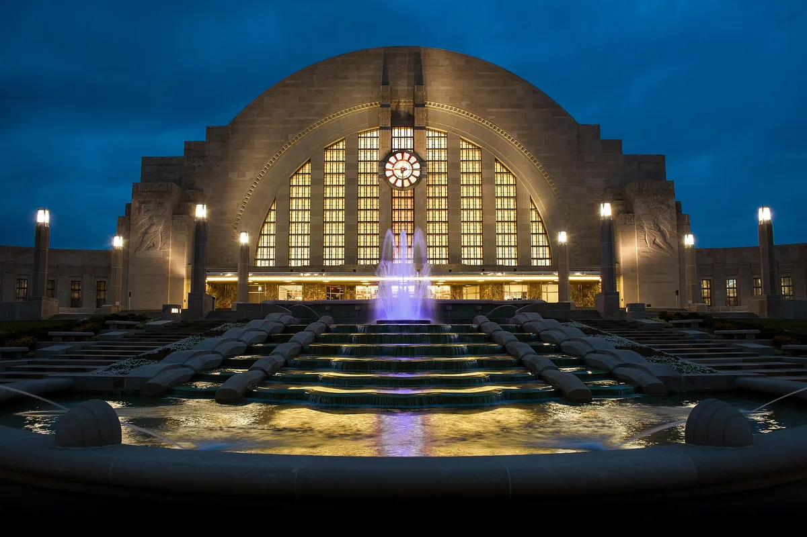
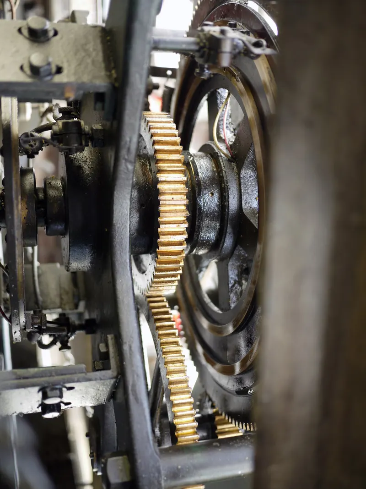
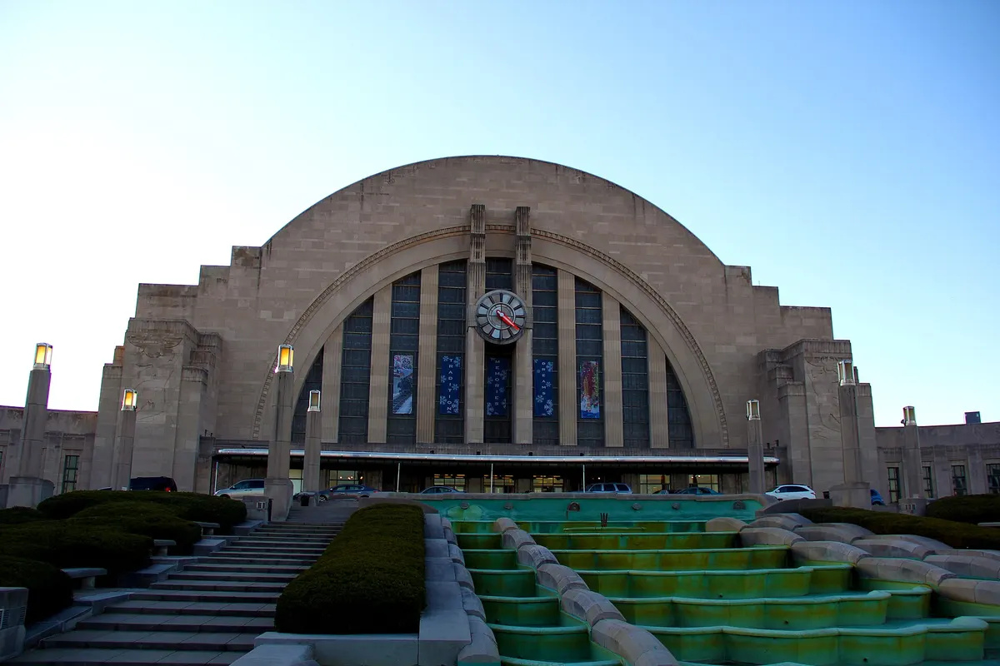

Visit Union Terminal

Union Terminal is home to Cincinnati Museum Center. You can explore three museums, see a movie on a giant dome screen, or just sit in the rotunda and look up. These details were current in 2026, so check Cincinnati Museum Center's website before you go.
Hours

Museum Center is open every day from 10 a.m. to 5 p.m. It's closed on Thanksgiving Day and Christmas Day.
While you wait for the doors to open, look up at the big clock in the front window. The gears that drive it sit hidden behind its face.
Save some time for the rotunda itself, and remember to look up.
Museums Inside
One Museum Admission ticket covers three museums:
- Cincinnati History Museum
- Museum of Natural History & Science
- The Children's Museum
The OMNIMAX® Theater and the Nancy & David Wolf Holocaust & Humanity Center need separate tickets.
Getting There

1301 Western Avenue
Cincinnati, OH 45203
(513) 287-7000
Parking is $6 per car, or $4 after 4:30 p.m. Metro bus Route 49 runs from downtown to the front entrance. And yes, it's still a train station: Amtrak's Cardinal stops here.